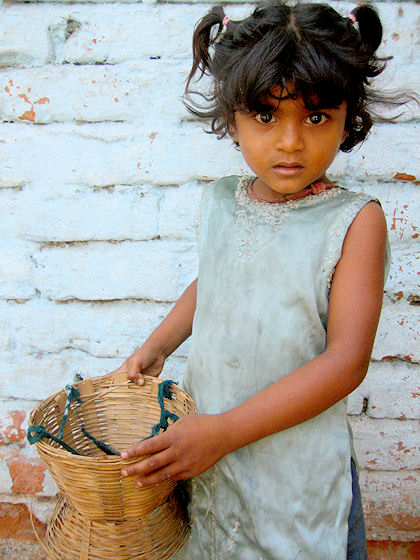
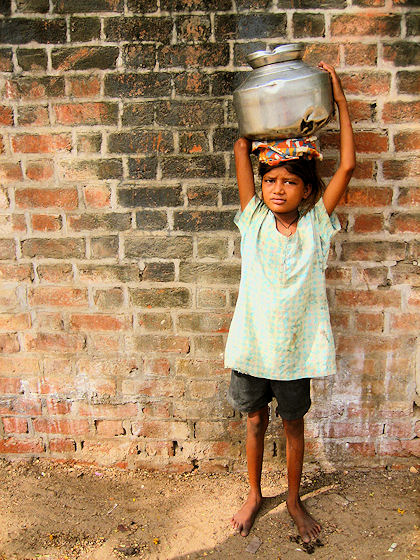
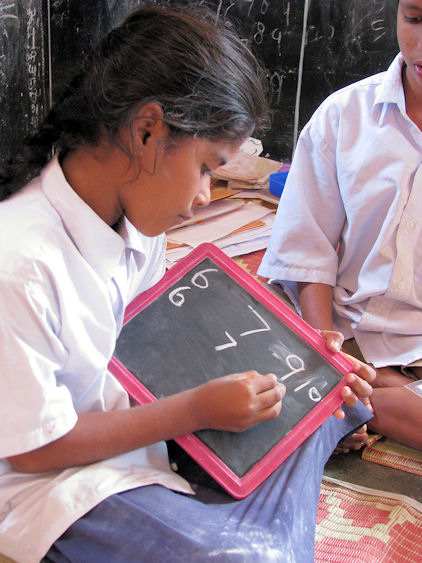
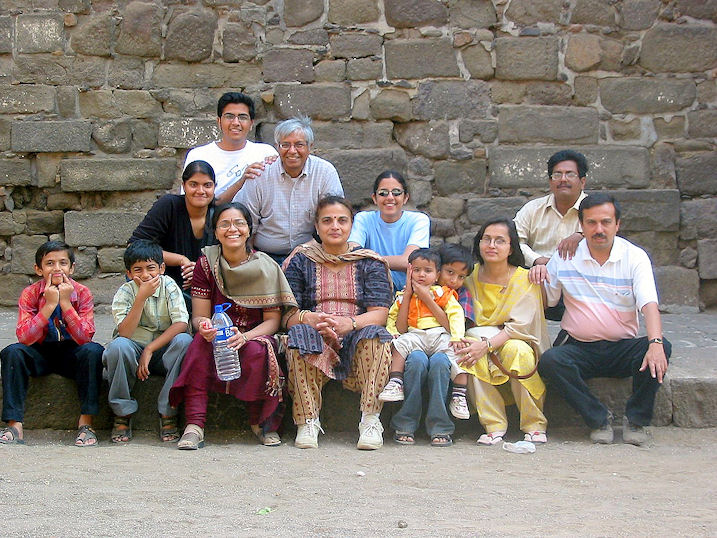
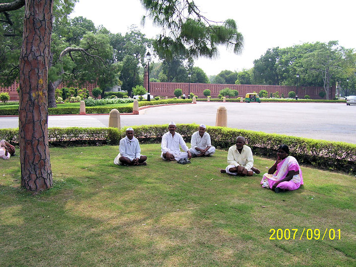

mailto:payer@payer.de
Zitierweise | cite as:
Payer, Alois <1944 - >: Sanskritkurs. -- 37. Lektion 37. -- Fassung vom 2009-01-20. -- URL: http://www.payer.de/sanskritkurs/lektion37.htm
Erstmals hier publiziert: 2008-12-31
Überarbeitungen: 2009-01-20 [Verbesserungen]
Anlass: Lehrveranstaltungen 1980 - 1984
©opyright: Dieser Text steht der Allgemeinheit zur Verfügung. Eine Verwertung in Publikationen, die über übliche Zitate hinausgeht, bedarf der ausdrücklichen Genehmigung des Verfassers
Dieser Text ist Teil der Abteilung Sanskrit von Tüpfli's Global Village Library
Falls Sie die diakritischen Zeichen nicht dargestellt bekommen, installieren Sie eine Schrift mit Diakritika wie z.B. Tahoma.
Die Devanāgarī-Zeichen sind in Unicode kodiert. Sie benötigen also eine Unicode-Devanāgarī-Schrift.
Adverbien werden im Sanskrit gebildet
Im ersten Fall ist die Grenze zwischen lebendigem Kasus und Adverb fließend. Hierzu gehören als Sonderfall die Adverbien, die erstarrte, alte Kasusformen sind, während in der Deklination andere Formen gebraucht werden bzw. die entsprechenden Nomina nicht mehr als Nomina gebraucht werden.
Der Akkusativ (द्वितीया) kann adverbial
gebraucht werden auf die Fragen:
Adverbial gebraucht werden kann der Akkusativ:
|
Der Instrumentalis (तृतीया) kann
adverbial gebraucht werden auf die Fragen:
Adverbial gebraucht werden kann der Instrumentalis:
|
Selten wird der Dativ (चतुर्थी) adverbial
gebraucht auf die Fragen:
Beispiel:
|
Der Ablativ (पञ्चमी) kann adverbial
gebraucht werden auf die Fragen:
Adverbial gebraucht werden kann der Ablativ:
|
| Selten wird der Genetiv (षष्ठी) adverbial
gebraucht auf die Frage "nach wie langer Zeit?" z.B. चिरस्य "nach langer Zeit" (zu चिर 3 "lang (Zeit)" |
Der Lokativ (सप्तमी) kann adverbial
gebraucht werden auf die Fragen:
Beispiele:
|
Beispiele:
जातु "überhaupt" (ursprünglich "von Geburt, von Natur", Akk.sg.n. zu जातु <nicht mehr als Nomen gebräuchlich>)
तूष्णीम् "schweigend" (Akk.sg. zu einem nicht mehr gebräuchlichen तूष्णी f. "Schweigen")
एवम् "so" (zu einem sonst verloren gegangenen Pronominalstamm एव "ein, einzig")
Von den Pronominalstämmen तद्, इदम् bzw.
अ-, यद्, किम् bzw. कु kann man mit den Adverbialsuffixen
entsprechende Pronominaladverbien ableiten. |
| Suffix | Pronominalstamm | |||
|---|---|---|---|---|
| तद् | इदम् अ |
यद् | किम् कु |
|
| -तस् Ablativ |
ततस् von da, darauf, deshalb |
इतस् अतस् von hier, dieserhalb |
यतस् woher, wovon |
कुतस् woher?, weshalb? |
| -त्र Lokativ |
तत्र da, dort |
अत्र hier |
यत्र wo |
कुत्र wo? |
| -था Art und Weise |
तथा so |
यथा wie |
||
| -थम् Art und Weise |
कथम् wie? |
|||
| -दा Zeit |
तदा damals, dann |
यदा als |
कदा wann? |
|
| Ein weiteres Frageadverb ist: क्व "wo?" |

Abb.: क्व ?
[Bildquelle: Meanest Indian. --
http://www.flickr.com/photos/meanestindian/164113021/. -- Zugriff am
2008-12-30. --


 Creative
Commons Lizenz (Namensnennung, keine kommerzielle Nutzung, keine
Bearbeitung)]
Creative
Commons Lizenz (Namensnennung, keine kommerzielle Nutzung, keine
Bearbeitung)]
| Weitere Adverbialsuffixe | |
| -वत् | kann an beliebige Nomina angehängt
werden, um auszudrücken "nach Art von, gleich wie" z.B. पुत्रवत् "wie ein(en) Sohn" |
| -तस् | an Nomina und Pronomina. Meist
ablativische Bedeutung "woher?", aber auch "wo?", "wohin?" z.B. आदितस् "von Anfang an" |
| -धा |
|
Beispiel: सुचिरम् "sehr lange (Zeit)"
Beispiel: रक्षार्थम् "in der Art von jemandem, dessen Zweck Behüten ist, zum Zweck des Behütens". Kann auch als zu 5.1. gehörig betrachtet werden: -अर्थम् als adverbiales Hinterglied.
अव्ययीभाव = "unveränderlich/undeklinierbar gewordene"
| Ein अव्ययीभाव ist ein adverbiales
Kompositum, dessen Vorderglied ein Indeklinabile (Postposition,
Partikel u. ä.) ist, und dessen Hinterglied ein Nomen ist, das die
Endung des Akkusativ Singulara Neutrum annnimmt.
Bei der Auflösung des Kompositums würde das Vorderglied das Hinterglied regieren: Beispiele:
Besonders wichtig sind अव्ययीभाव mit यथा "wie" als Vorderglied: z.B. यथाकामम् = कामो यथास्ति = "wie es der Wunsch ist, nach Wunsch, beliebig" |

Abb.: यथाशक्ति
[Bildquelle: Meanest Indian. --
http://www.flickr.com/photos/meanestindian/156516309/. -- Zugriff am
2008-12-30. --


 Creative
Commons Lizenz (Namensnennung, keine kommerzielle Nutzung, keine Bearbeitung)]
Creative
Commons Lizenz (Namensnennung, keine kommerzielle Nutzung, keine Bearbeitung)]
Bei den Verben
kann statt eines prädikativen Adjektivs ein prädikatives Adverb stehen: z.B. तुष्णीं बभूव "er wurde schweigend, er verstummte" |
Abb.: तुष्णीं बभूवुः
Chishti (چشتی) Dargah (درگه),
Fatehpur Sikri = फतेहपूर
सिकरी /
فتحپور سیکری
[Bildquelle: Protocollide. --
http://www.flickr.com/photos/urbanvillage/1980227522/. -- Zugriff am
2008-12-30. --


 Creative
Commons Lizenz (Namensnennung, keine kommerzielle Nutzung, keine
Bearbeitung)]
Creative
Commons Lizenz (Namensnennung, keine kommerzielle Nutzung, keine
Bearbeitung)]
Indefinitpronomina (unbestimmte
Fürwörter) werden durch Anfügen von
an die Kasus des Fragepronomens किम् gebildet. z.B.
|
|
"Wer?, wie?, was?, wieso? weshalb?, warum?
कः कथं किं Motto der Sesamstraße, das eine gute Leitlinie fürs Leben und das Sanskritstudium ist |
Siehe auch Lektion 4.
Man muss unterscheiden
Bei Wortfragen wird nach einem Agens (कर्तृ), einem Objekt, einer Tätigkeit, einem Umstand ü. ä. gefragt, z.B.
Bei Satzfragen wird der ganze Inhalt des Satzes erfragt, z.B.
| Schema: Fragepronomen/Frageadverb - Satz |
Beispiele:
को ग्रामं गच्छति = केन ग्रामो गम्यते = "Wer geht ins Dorf?"
किं बाला अधीयीरन् = "Was sollten Kinder lernen?"
क्व रामो वसति = Wo wohnt Rāma?

Abb.: किं बाला अधीयीरन्
Kanchipuram =
காஞ்சிபுரம
[Bildquelle: mckaysavage. --
http://www.flickr.com/photos/mckaysavage/3103429189/. -- Zugriff am
2008-12-30. --
 Creative
Commons Lizenz (Namensnennung)]
Creative
Commons Lizenz (Namensnennung)]
| Manchmal ist es nur aus dem Zusammenhang erkennbar, ob ein Satz ein Fragesatz ist. |
| Schema I: Verb - restlicher Satz |
Beispiel:
गमिष्यति ब्राह्मणबालो गुरुम् । "Wird der Brahmanenjunge zu einem Meister gehen?"
| Schema II: Fragepartikel (meist am Satzanfang) - Satz Die wichtigsten Fragpartikel sind:
Diese Partikel entsprechen dem Fragezeichen. |
Beispiel:
अपि सत्यम् । "Ist es auch wahr?"
किं शक्नोति । "Kann er denn?"
कच्चित्क्षत्रियेण शत्रवो जिताः । "Hat etwa der Kṣatriya die Feinde besiegt?"
Anmerkung: किम् kann außer "was?" und als Fragepartikel auch "warum?, wozu?" bedeuten. So bes. mit dem Instrumentalis (तृतीया):
किं क्रोधेन । "Wozu der Zorn? Was nützt der Zorn? Was soll der Zorn?"
मूर्ख 3: stumpfsinnig, blöd, dumm m. Dummkopf
मुनि m.: Weiser, (Schweige)asket
शाक्यमुनि m.: Asket aus dem Geschlecht der शाक्य (Kṣatriyas aus कपिलवस्तु) = Buddha Gautama
Abb.: शाक्यमुनिः
Hussain Sagar = హుస్సేన్ సాగర్, Hyderabad =
హైదరాబాద్
[Bildquelle: .krish.Tipirneni. --
http://www.flickr.com/photos/krish4u/426497125/. -- Zugriff am 2008-12-31.
--


 Creative
Commons Lizenz (Namensnennung, keine kommerzielle Nutzung, keine
Bearbeitung)]
Creative
Commons Lizenz (Namensnennung, keine kommerzielle Nutzung, keine
Bearbeitung)]
दिन n.: Tag
वृक्ष m.: Baum
Abb.: वृक्षः
जयपुर
[Bildquelle: counterclockwise. --
http://www.flickr.com/photos/xclockwise/520742595/. -- Zugriff am
2008-12-31. --


 Creative
Commons Lizenz (Namensnennung, keine kommerzielle Nutzung, share alike)]
Creative
Commons Lizenz (Namensnennung, keine kommerzielle Nutzung, share alike)]
मुख n.: Mund, Gesicht, Vorderteil, Anfang
A) Beantworten Sie folgende Fragen auf Sanskrit mit Hilfe der in Klammern angegebenen Wörter. Übersetzen Sie die Fragesätze.
Beispiel: क आगच्छति (राम) । » राम आगच्छति ।
कस्मै ब्राह्मण्यन्नं ददौ ॥१॥ (भिक्षु, बाला, दास, भगवन्त्)
क आर्यसत्यान्यजानात् ॥२॥ (बुद्ध, शाक्यमुनि)
कुत्राग्निश्चीयते ॥३॥ (यज्ञस्थान, मही)
कदा ब्राह्माणा घृतमग्नौ जुह्वति ॥४॥ (यज्ञकाल, देवान् स्तु <Absolutiv>)
कस्मान्मतिमतयः पुण्यं चक्रुः ॥५॥ (स्वर्गलोभ, नरकभय, भीतनरकता)
किमेव शस्त्रं छिनत्ति ॥६॥ (शरीर, अजीव)
किंकामः शत्रुरार्यैः सह युयुधे ॥७॥ (धनं जि)
कया भिक्षुरादितः ॥८॥ (गुणवती शूद्रा)
कुतः सुपुनर्भवं गम्यते ॥९॥ (कृतपुण्यत्व, सुनीति)
केन शूद्रा न काम्येत ॥१०॥ (द्विजाति, ब्राह्मण, साधु)
किमर्थं सुगतो ऽगारादनगार्यं प्रवव्राज ॥११॥ (दुःखमोक्ष, मोक्षनयन्ती प्रज्ञा)
कस्याः पुत्रः कृष्ण आसीत् ॥१२॥ (देवकी)
Abb.: कृष्ण und बलरा्म besuchen ihre Eltern वसुदेव und देवकी
Gemälde von राजा रवि वर्मा (1848 - 1906)
[Bildquelle: Wikipedia. Public domain]
क्व मर्तुं सज्जना इच्छन्ति ॥१३॥ (काशी = वाराणसी)
Abb.: क्व मर्तुं
सज्जना इच्छन्ति
काशी = वाराणसी
[Bildquelle: amanderson2. --
http://www.flickr.com/photos/amanderson/2414520995/. -- Zugriff am
2008-12-31. --
 Creative
Commons Lizenz (Namensnennung)]
Creative
Commons Lizenz (Namensnennung)]
केषां धर्मो वेदाध्ययनम् ॥१४॥ (द्विज, द्विजाति, आर्य)
कैर्वेदः प्रोक्तः ॥१५॥ (ऋषि)
कस्मिञ्जात आर्यः सुखमाप्नोति ॥१६॥ (पुत)
का नरा लुभ्यन्ति ॥१७॥ (सुरूपशरीरा, देवीरूपा)
के नराः सुरूपा लुभ्यन्ति ॥१८॥ (समोह, बुद्धिमन्त्)
कस्या इन्द्रः पुत्रं दास्यति ॥१९॥ (कृतव्रता पुण्यवती सुमतिब्राह्मणी)
B) Übersetzen Sie:
किं स्थितप्रज्ञः प्रव्रजेत्किमगारे पुत्रेषु वसेत् ॥१॥
अपि गुरुः सत्यं जानाति ॥२॥
कच्चिच्छुद्रा द्विजदासाः ॥३॥
कच्छिच्छुद्रो भारमाबिभः ॥४॥
C) Übersetzen Sie folgende अव्ययीभाव :
1. अति Postposition mit Akk.: "über ... hinaus"
2. अधि "in"
Abb.: अधिकेरलं वर्तन्ते
[Bildquelle: Michael Foley Photography. --
http://www.flickr.com/photos/michaelfoleyphotography/2388340875/. -- Zugriff
am 2008-12-31. --


 Creative
Commons Lizenz (Namensnennung, keine kommerzielle Nutzung, keine
Bearbeitung)]
Creative
Commons Lizenz (Namensnennung, keine kommerzielle Nutzung, keine
Bearbeitung)]
3. अनु "entsprechend, entlang, nach"
4. अप "ohne"
5. अभि "in Richtung auf"
6. आ "seit, bis, einschließlich"

Abb.: आबालवृद्धं लंदननगरे ववृतिरे
[Bildquelle: saketvora. --
http://www.flickr.com/photos/saket_vora/2676024863/. -- Zugriff am
2008-12-31. --


 Creative
Commons Lizenz (Namensnennung, keine kommerzielle Nutzung, share alike)]
Creative
Commons Lizenz (Namensnennung, keine kommerzielle Nutzung, share alike)]
7. उप "nahe"

Abb.: उपवृक्षं सीदन्ति
Delhi = दहली /
دہلی
[Bildquelle: Tianyake. --
http://www.flickr.com/photos/tianyake/1430877150/. -- Zugriff am 2008-12-31.
--


 Creative
Commons Lizenz (Namensnennung, keine kommerzielle Nutzung, keine
Bearbeitung)]
Creative
Commons Lizenz (Namensnennung, keine kommerzielle Nutzung, keine
Bearbeitung)]
8. यथा
Übersetzen Sie ins Sanskrit indem Sie ausschließlich Verbformen des Perfekt verwenden:
Als einmal irgendein Greis in ein anderes Dorf ging, ermüdete er unterwegs. Da ging er, um sich auszuruhen, zum Fuß eines an der Seite stehenden Mangobaums. Auf diesem Baum gab es reife Früchte. Der Greis bekam Lust auf diese. Aber er konnte nicht auf den Baum steigen und nach den Früchten greifen. Zum Glück waren auf diesem Baum irgendwelche Affen, die Früchte fraßen. Als er diese erblickte, freute sich der Greis. Was tat er? Er nahm einige Steine, zielte auf die Affen und warf. Die erbosten Affen pflückten irgendwelche Früchte und warfen sie auf den Greis. Der Greis nahm diese erfreut und ging in seine gewünschte Gegend. Siehe, das Geschick des Greises!
Zu Lektion 38